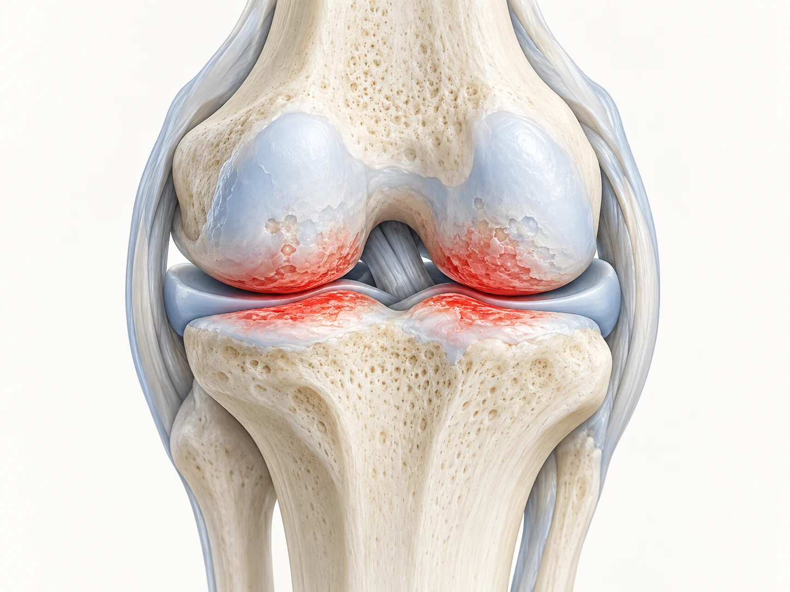
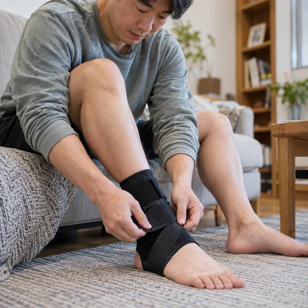
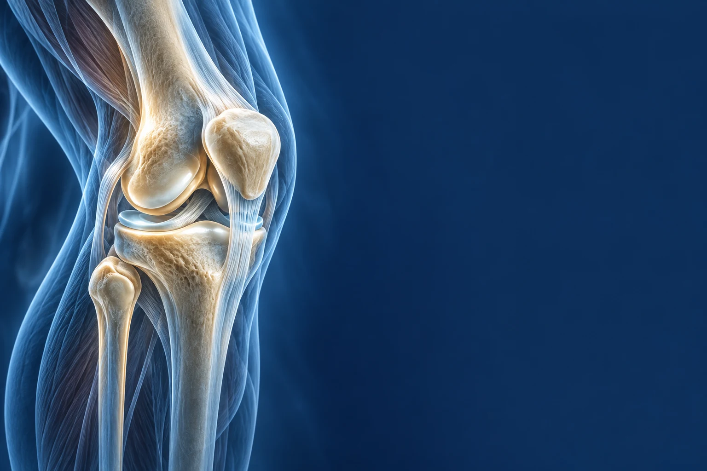
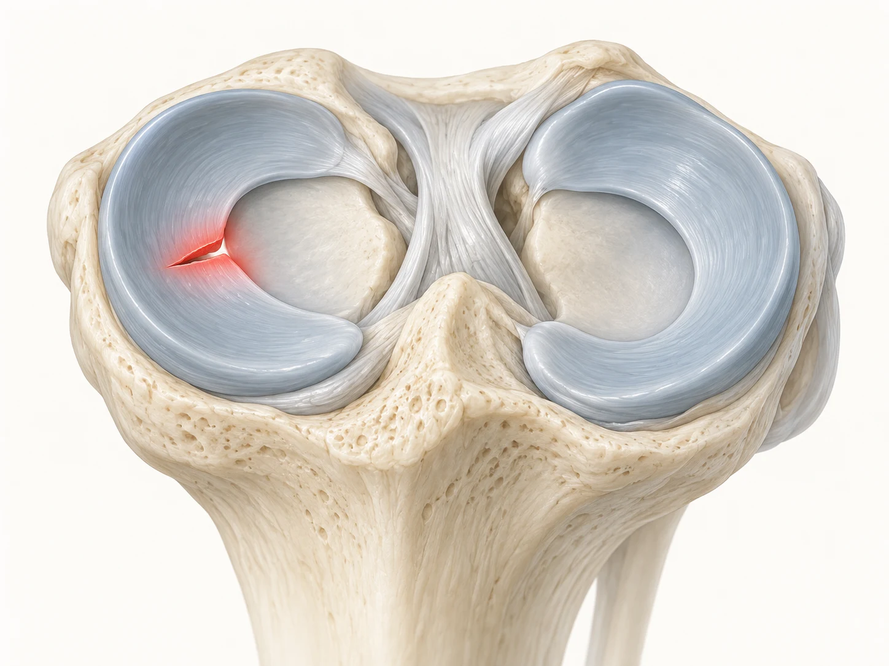
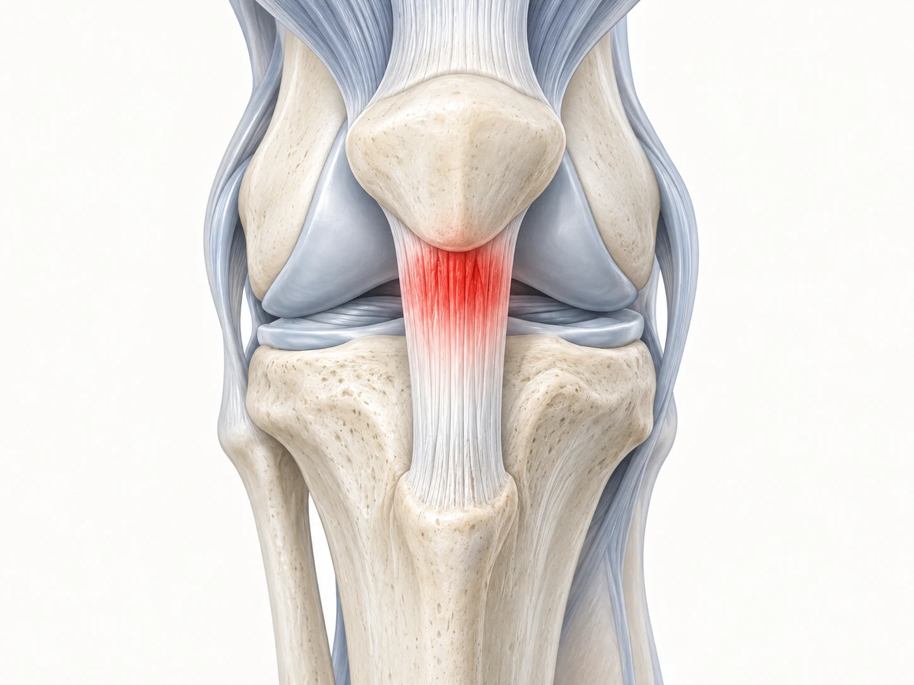
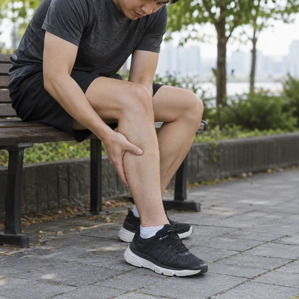
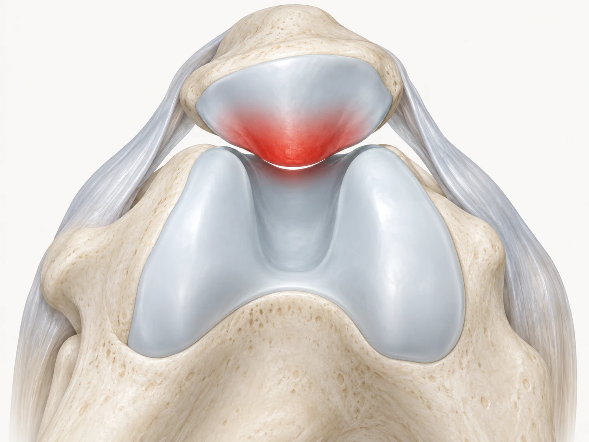

통증의 원인을 더 깊이 찾아가는 진료
“무릎은 걸을 때 체중을 지탱하는 관절로, 연골과 힘줄 등 여러 구조의 문제로 통증이 생길 수 있습니다.
보행과
체중 부하에 따른 통증의 변화, 관절의 움직임과 붓기·잠김 여부를 함께 살펴 필요한 검사와 치료 방향을 안내합니다.”
ABOUT THE CONDITION
퇴행성 관절염
관절 표면을 덮는 연골과 주변 조직에 퇴행성 변화가 생겨 통증과 뻣뻣함이 나타나는 질환입니다.

퇴행성 관절염의 원인
나이가 들며 연골이 닳는 변화에 체중과 생활 습관이 영향을 줄 수 있습니다. 과거 무릎 손상도 관절 상태를 살필 때 함께 확인합니다.

노화로 인한 무릎 연골의 닳음 및 마모
체중 증가로 인한 무릎 관절의 과도한 부하
쪼그려 앉거나 무릎을 많이 꿇는 생활 습관

무릎 인대나 연골판 등 이전의 외상 방치

SYMPTOMS
퇴행성 관절염 대표 증상
- 01
걷거나 계단을 오르내릴 때 무릎 통증 심화
- 02
오래 앉아 있다가 일어설 때 무릎이 뻣뻣하고 아픔
- 03
무릎 관절이 붓고 쑤시며 열감이 동반됨
- 04
움직일 때 무릎 내부에서 마찰음이나 걸리는 느낌
- 05
증상이 진행되면서 다리가 O자형으로 변형됨
퇴행성 관절염의 진단
보행과 체중 부하에 따른 통증의 변화, 관절의 움직임과 붓기·잠김 여부를 함께 살펴
필요한 검사와 치료 방향을 안내합니다.

문진·신체검진
통증이 시작된 시점과 양상, 병력과 생활 습관을 확인합니다. 압통과 움직임, 근력·감각 등을 함께 살펴 진단의 방향을 정합니다.

움직임·기능 평가
아픈 부위를 누르거나 움직일 때의 반응을 확인합니다. 관절의 움직임 범위와 근력, 일상 동작에서 나타나는 불편함을 함께 평가합니다.

X-ray
뼈의 정렬과 관절 간격, 퇴행성 변화 등을 확인하는 검사입니다. 진찰 결과에 따라 촬영하여 골절이나 다른 뼈·관절 문제를 살펴봅니다.
검사는 증상과 진찰 결과에 따라 필요한 항목을 선택합니다.
ABOUT THE CONDITION
반월상연골판 손상
허벅지뼈와 정강이뼈 사이에서 충격을 흡수하는 반월상연골판이 손상된 상태입니다.

반월상연골판 손상의 원인
무릎을 굽힌 채 방향을 바꾸거나 회전하는 동작에서 연골판이 손상될 수 있습니다. 퇴행성 변화가 있는 경우 일상적인 동작도 부담이 될 수 있습니다.

무릎이 구부러진 상태에서 갑작스럽게 방향을 틀 때
축구, 농구, 테니스 등 급정지와 회전이 많은 운동

퇴행성 변화로 인한 연골판 약화 및 미세 손상 누적
쪼그려 앉은 자세에서 무리하게 일어나는 동작
SYMPTOMS
반월상연골판 손상 대표 증상
- 01
무릎을 구부리거나 방향을 틀 때 찌릿한 통증
- 02
무릎 안에서 뭔가가 걸리거나 락킹(Locking) 현상 발생
- 03
무릎에 힘이 잘 들어가지 않고 꺾이는 듯한 불안정감
- 04
무릎 관절 부위가 자주 붓고 무거운 느낌
- 05
관절 간격 부위를 누르면 확실한 압통 발생
반월상연골판 손상의 진단
보행과 체중 부하에 따른 통증의 변화, 관절의 움직임과 붓기·잠김 여부를 함께 살펴
필요한 검사와 치료 방향을 안내합니다.
문진·신체검진
통증이 시작된 시점과 양상, 병력과 생활 습관을 확인합니다. 압통과 움직임, 근력·감각 등을 함께 살펴 진단의 방향을 정합니다.
움직임·기능 평가
아픈 부위를 누르거나 움직일 때의 반응을 확인합니다. 관절의 움직임 범위와 근력, 일상 동작에서 나타나는 불편함을 함께 평가합니다.
X-ray
뼈의 정렬과 관절 간격, 퇴행성 변화 등을 확인하는 검사입니다. 진찰 결과에 따라 촬영하여 골절이나 다른 뼈·관절 문제를 살펴봅니다.
검사는 증상과 진찰 결과에 따라 필요한 항목을 선택합니다.
ABOUT THE CONDITION
슬개건염
무릎 앞쪽의 슬개골과 정강이뼈를 잇는 힘줄에 반복적인 부담이 쌓여 생기는 질환입니다.

슬개건염의 원인
점프와 달리기처럼 무릎에 힘이 반복해서 전달되는 활동이 힘줄에 부담을 줍니다. 갑작스러운 운동량 증가와 근육의 긴장도 관련됩니다.
점프, 런닝, 계단 오르내리기 등 무릎을 반복 사용하는 운동

허벅지 앞쪽 근육(대퇴사두근)의 과도한 긴장 및 단축
갑작스럽게 운동량이나 강도를 늘린 경우
딱딱한 바닥에서 지속적으로 뛰는 작업이나 운동
SYMPTOMS
슬개건염 대표 증상
- 01
뛰거나 계단을 오르내릴 때 무릎 앞쪽에 통증 발생
- 02
슬개골 아래쪽을 누르면 뚜렷한 압통
- 03
무릎을 구부리거나 굽혔다 펼 때 뻐근함
- 04
운동 후 무릎 앞쪽에 붓기나 열감 동반
- 05
오래 앉아 있을 때 무릎 전방이 쑤시고 불편함
슬개건염의 진단
보행과 체중 부하에 따른 통증의 변화, 관절의 움직임과 붓기·잠김 여부를 함께 살펴
필요한 검사와 치료 방향을 안내합니다.
문진·신체검진
통증이 시작된 시점과 양상, 병력과 생활 습관을 확인합니다. 압통과 움직임, 근력·감각 등을 함께 살펴 진단의 방향을 정합니다.
움직임·기능 평가
아픈 부위를 누르거나 움직일 때의 반응을 확인합니다. 관절의 움직임 범위와 근력, 일상 동작에서 나타나는 불편함을 함께 평가합니다.
X-ray
뼈의 정렬과 관절 간격, 퇴행성 변화 등을 확인하는 검사입니다. 진찰 결과에 따라 촬영하여 골절이나 다른 뼈·관절 문제를 살펴봅니다.
검사는 증상과 진찰 결과에 따라 필요한 항목을 선택합니다.
ABOUT THE CONDITION
슬개대퇴통증증후군(PFPS)
무릎뼈 주변과 앞쪽에 통증이 나타나는 상태로, 달리기나 계단처럼 무릎을 반복해 굽히는 활동과 관련될 수 있습니다.

슬개대퇴통증증후군의 원인
무릎·골반의 정렬과 허벅지 근육의 균형이 슬개골의 움직임에 영향을 줍니다. 오래 앉아 있거나 운동량을 갑자기 늘리면 부담이 커질 수 있습니다.

무릎 관절 및 골반 정렬 불균형 (X자 다리 등)

허벅지 안쪽/바깥쪽 근육의 힘 불균형

장시간 무릎을 구부린 채 앉아있는 습관
갑작스러운 하체 운동량 증가
SYMPTOMS
슬개대퇴통증증후군 대표 증상
- 01
계단을 오르내리거나 쪼그려 앉을 때 무릎 앞쪽 통증
- 02
영화관, 운전 등 오래 앉아 있다가 일어설 때 통증 심화
- 03
무릎을 움직일 때 삐걱거리는 마찰음 발생
- 04
무릎 뼈 윗부분이나 주변이 뻐근하게 아픔
- 05
내리막길을 걸을 때 무릎이 불안정함
슬개대퇴통증증후군의 진단
보행과 체중 부하에 따른 통증의 변화, 관절의 움직임과 붓기·잠김 여부를 함께 살펴
필요한 검사와 치료 방향을 안내합니다.
문진·신체검진
통증이 시작된 시점과 양상, 병력과 생활 습관을 확인합니다. 압통과 움직임, 근력·감각 등을 함께 살펴 진단의 방향을 정합니다.
움직임·기능 평가
아픈 부위를 누르거나 움직일 때의 반응을 확인합니다. 관절의 움직임 범위와 근력, 일상 동작에서 나타나는 불편함을 함께 평가합니다.
X-ray
뼈의 정렬과 관절 간격, 퇴행성 변화 등을 확인하는 검사입니다. 진찰 결과에 따라 촬영하여 골절이나 다른 뼈·관절 문제를 살펴봅니다.
검사는 증상과 진찰 결과에 따라 필요한 항목을 선택합니다.
TREATMENT
회복을 위한 치료 프로그램
환자의 상태에 따라 필요한 치료를 판단합니다.